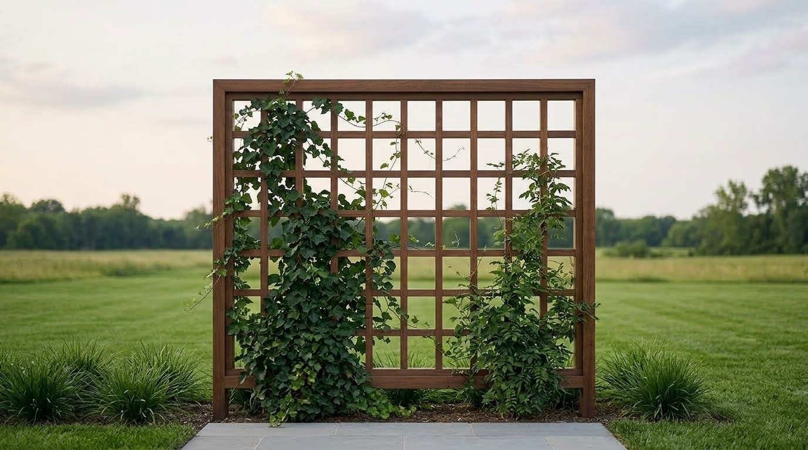
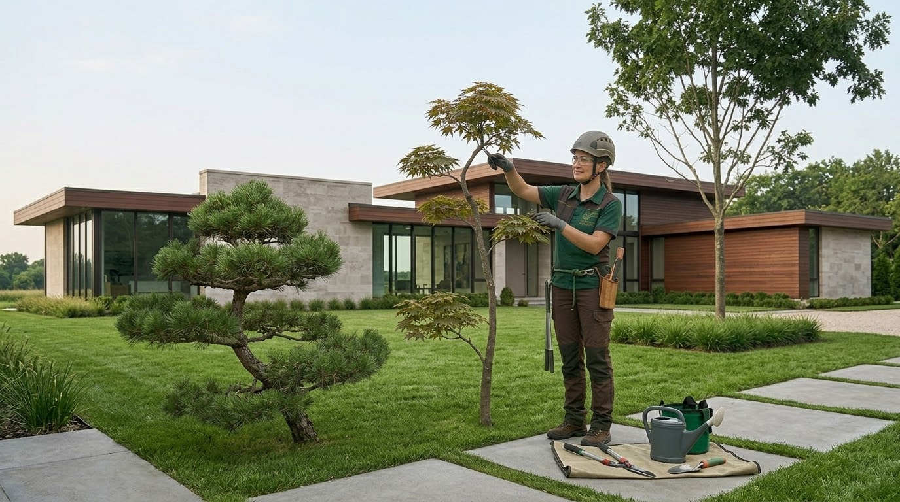
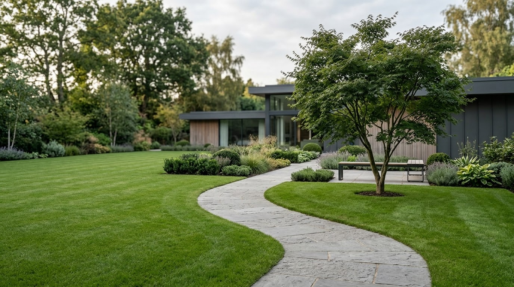
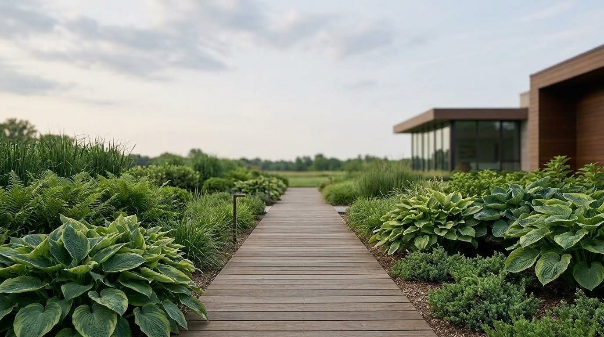
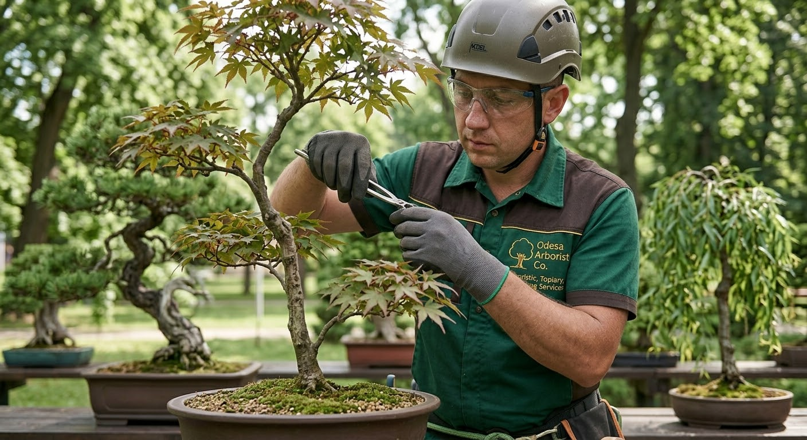
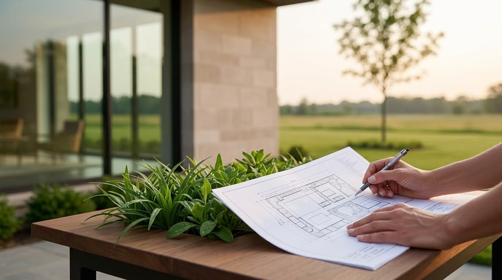

Od bezpiecznego usuwania awaryjnych drzew po projektowanie ogrodów pod klucz — jeden zespół, pełna odpowiedzialność, praca przez cały rok w całym województwie mazowieckim.

O firmie
Denwara powstała w 2024 roku jako wspólna marka, ale nasz fundament to 3–4 lata indywidualnego doświadczenia każdego ze współzałożycieli w branży. Przeszliśmy drogę od pojedynczych specjalistów do zgranego zespołu, dzięki czemu oferujemy klientom sprawdzone, dopracowane rozwiązania.
Nie robimy „jak wszyscy" — tworzymy przestrzenie z własnym charakterem. Pracujemy wyłącznie na sprzęcie klasy premium — Stihl, Bobcat i Fiskars — bo najwyższy standard zaczyna się od narzędzi.
Nasze usługi
Nie musisz szukać osobnych ekip do wycinki, budowy, brukowania czy mycia elewacji — bierzemy na siebie cały proces, od rozbiórki po finiszowy detal.
Bezpieczne usuwanie, kronowanie, leczenie i wzmacnianie drzew każdej trudności.
Projekt, wizualizacja 3D, zieleń, brukowanie, oświetlenie i tarasy — ogród pod klucz.
Mulcz do pielęgnacji rabat oraz drewno opałowe z dostawą.
Mycie ciśnieniowe kostki, dachów i elewacji oraz sezonowa pielęgnacja terenu.




Nasza specjalizacja
Bezpiecznie usuwamy i przycinamy drzewa w najtrudniejszych warunkach — tuż przy liniach energetycznych, budynkach i ogrodzeniach. Technika częściowego opuszczania na linach pozwala pracować w ograniczonej przestrzeni bez ryzyka dla otoczenia.
Każdą gałąź przerabiamy na mulcz na miejscu, a pozostałości po cięciu w całości wywozimy. Teren po pracach zostawiamy czysty — bez śladu po zabiegu.
Jak pracujemy
Oglądamy teren, słuchamy potrzeb i doradzamy najlepsze rozwiązanie techniczne.
Przygotowujemy jasny kosztorys bez ukrytych opłat i ustalamy realny termin realizacji.
Wykonujemy prace zgodnie z planem, sprzątamy teren i oddajemy efekt gotowy do użytku.
Gwarancje
Pracujemy tak, by wracano do nas i polecano nas znajomym — to nasza najważniejsza wizytówka.
Odpowiadamy za bezpieczeństwo Twojej działki i mienia podczas każdego etapu prac.
Żadnych ukrytych opłat ani rozciągniętych w nieskończoność terminów.
Opinie klientów
„Sami już nie radziliśmy sobie z pielęgnacją ogrodu — potrzebowaliśmy profesjonalnej, systemowej opieki. Ekipa Denwara przywróciła naszej działce porządek w kilka dni."
„Awaryjne drzewo groziło upadkiem na dach — zespół zjawił się szybko i bezpiecznie je usunął, korzystając z technik alpinistycznych. Zero szkód, pełny profesjonalizm."
„Szukaliśmy ekipy z własnym sprzętem, która zrobi wszystko szybko i pod klucz. Denwara zrealizowała cały ogród — od wycinki po tarasy — dokładnie w ustalonym terminie."
FAQ
Wycena jest zawsze bezpłatna i przygotowywana po oględzinach terenu. Kosztorys, który otrzymujesz, jest ostateczny — bez dodatkowych, niespodziewanych opłat.
Pracujemy 12 miesięcy w roku i planujemy realizacje tak, by dotrzymać ustalonego terminu — również przed ważnym wydarzeniem czy wyjazdem.
Tak, pracujemy wyłącznie profesjonalnym sprzętem — Stihl, Bobcat, Fiskars. Na obiekt kierujemy zespół dopasowany do skali zlecenia.
Stosujemy technikę alpinizmu przemysłowego z częściowym opuszczaniem gałęzi na linach — pozwala to precyzyjnie kontrolować każdy element cięcia, nawet tuż przy budynkach i liniach energetycznych.
Tak, w cenę usługi wliczone jest rozdrobnienie gałęzi na mulcz oraz pełny wywóz pozostałości — teren zostawiamy czysty.
Nie, działamy cały rok. Zimą to często najlepszy moment na cięcie i usuwanie drzew, bo drzewa są bez liści, a wiosną i latem realizujemy brukowanie, tarasy i ogrody.
Kontakt
Zadzwoń, napisz lub zostaw wiadomość — odpowiadamy szybko i doradzamy najlepsze rozwiązanie.